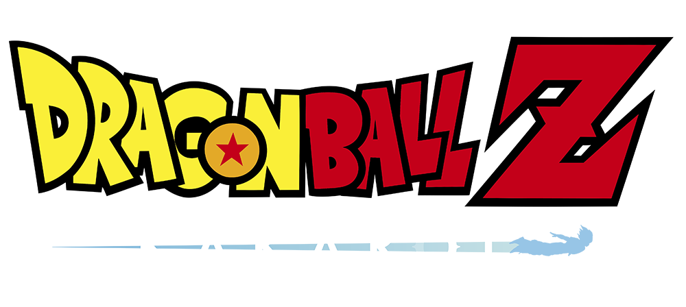
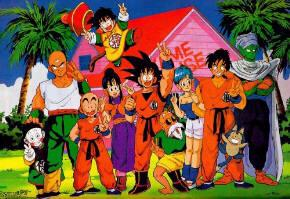
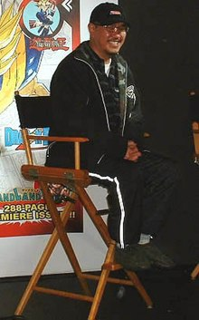
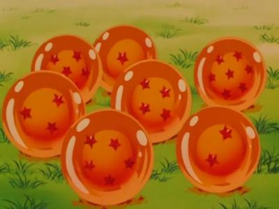
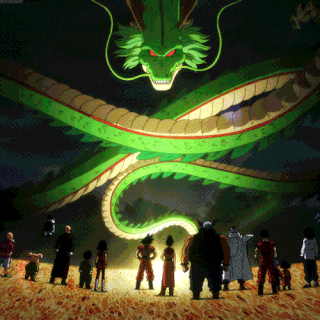
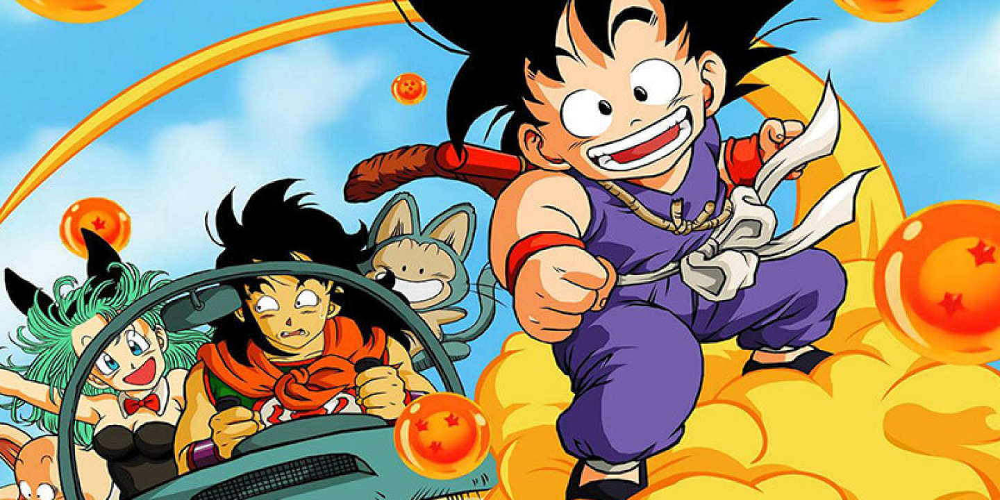
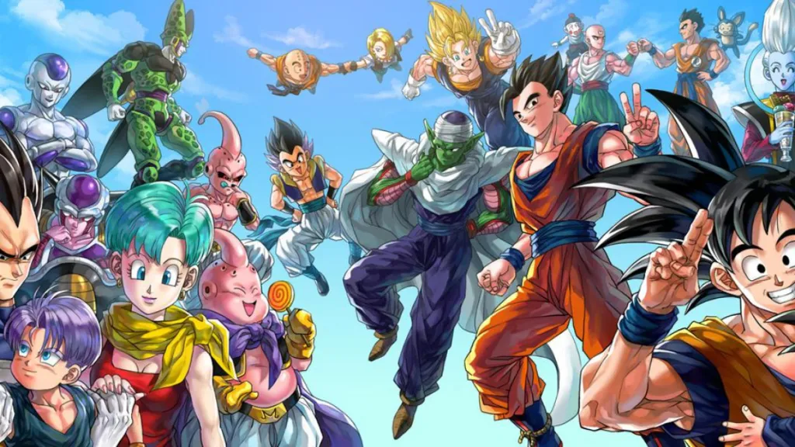
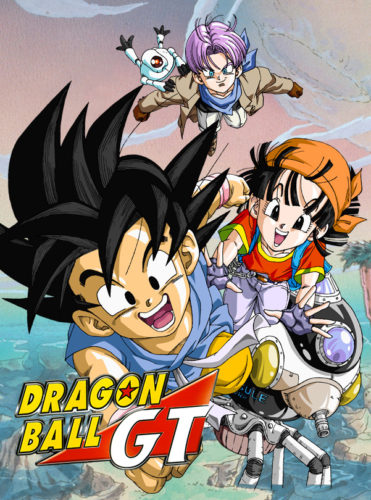
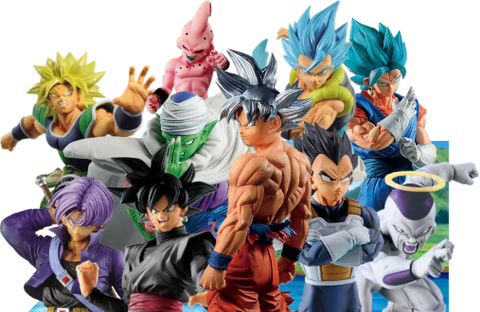
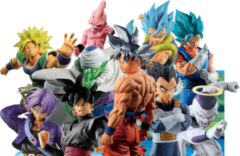

Dragon Ball Z: le succès international
 Dragon Ball Z est un manga écrit par Akira Toriyama adapté en animé qui a connu un succès planètaire. De nombreux jeunes d'aujourd'hui ont grandi au coté de Son Goku, un jeune garçon avec des pouvoirs inimaginable. Ce manga raconte en effet ces aventures et ces nombreux combats qu'il a dû livrer avec ces amis contre des antagonistes toujours plus puissant.
L'histoire de l'auteur: Akira Toriyama
Akira Toriyama est un célèbre mangaka qui a commencé sa vie d'auteur en publiant son tout premier manga: Dr Slump. Plus tard il écrira Dragon Boy, un manga d’aventures à gags, qui se transforme en une série de combats d’arts martiaux. L'histoire courte qu'il réalise ainsi, le conduira à écrire le manga Dragon Ball, son oeuvre la plus célèbre.


Ce qui rend l'univers de dragon ball aussi spécial, c'est qu'il existe en ce monde des boules de cristal qui renferme un dragon appelé Shenron capable de réaliser tout les voeux possible et inimaginable.
 Les différentes parties de l'univers Dragon Ball
L'oeuvre du célèbre Akira Toriyama se poursuit sur différentes parties:
- Dragon Ball 
- Dragon Ball Z 
- Dragon Ball GT 
- Dragon Ball super
Dans Dragon Ball, Goku est né avec une particularité, il possède en effet une queue de singe. Il vit dans la maison de son défunt grand-père Son Gohan, son seul souvenir de lui est une boule de cristal à quatres étoiles. C'est là qu'il va faire la rencontre de Bulma, une jeune adolescente à la recherche des septs boules de cristal. Goku va donc decider d'accompagner Bulma et vont tout deux faire des rencontres qu'ils n'oublieront jamais. Une grande aventure commence !
Dans Dragon Ball Z, Son Goku s'est marié à Chichi et ont eu un fils qu'ils ont décider d'appeller Son Gohan en hommage à son grand-père. Goku va faire la rencontre de son frère Radditz et va donc apprendre la vérité sur ces origines. Il vient en fait de la planète Végéta, une planète peuplé de guerriers surpuissant nommés les Saiyans. Suite à cela un combat entre frère va éclater. L'aventure de Son Goku continue donc avec de nombreux autres combat contre des ennemis encore plus puissants.
Dans Dragon Ball GT, Goku entraine Oob, qui n'est autre que la réincarnation de Buu, un antagonistes de Dragon Ball Z qui avait réussi à détruire la Terre. Mais à la fin de leur entrainement, un mystérieux dragon rouge sortie d'autre boules de cristal que nous connaissions fait rajeunir Goku. Les boules de cristal se sont éparpier dans tout l'univers. Le Saiyan va donc partir à l'aventure avec sa petite fille Pan, qui est la fille de son fils Gohan et Videl, ainsi qu'avec Trunks, fils de végéta et Bulma dans l"espoir de retrouver ses mystèrieuse boules de cristal. Mais ils vont rencontrer des difficultés qui pousseront les trois guerriers à repousser leurs limites.

Son Goku n'est pas un terriens, il descend d'un peuple de puissants guerriers appelé les Saiyans. Tout au long de sa vie, il a acquis certains pourvoirs de transformation qui le rendaient encore plus fort:
Les différentes transformations:

La plus belle rivalité dans l'histoire de dragon ball est celle de Son Goku et de Végéta, prince des saiyans. Son Goku étant toujours plus puissant que Végéta, celui-ci fait tout son possible pour rattraper le niveau de Son Goku, il y arrive quelques fois mais Son Goku parvient toujours à le surpasser. Mais au fond, nous savons que les deux saiyans s'apprécient.
Mais bien sur, avant d'être un anime, Dragon Ball est avant-tout un manga dont le nombre de tome varie celon les éditions (42 pour l'édition original et 34 pour l'édition perfect).
Cet oeuvre a donnée naissance à de nombreux produits dérivé comme les figurines ou encore les célèbres jeux vidéos basés sur la licence.
 
